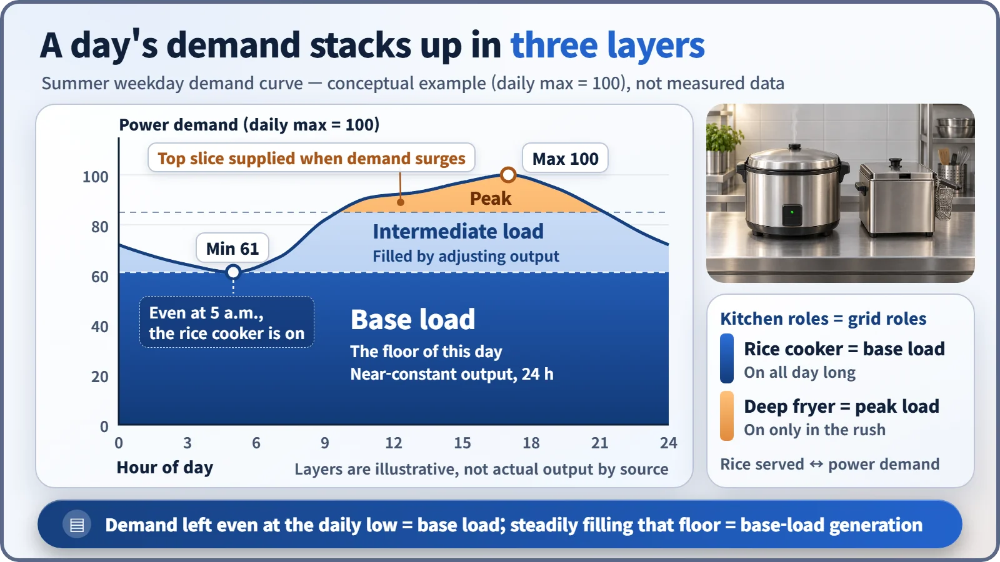
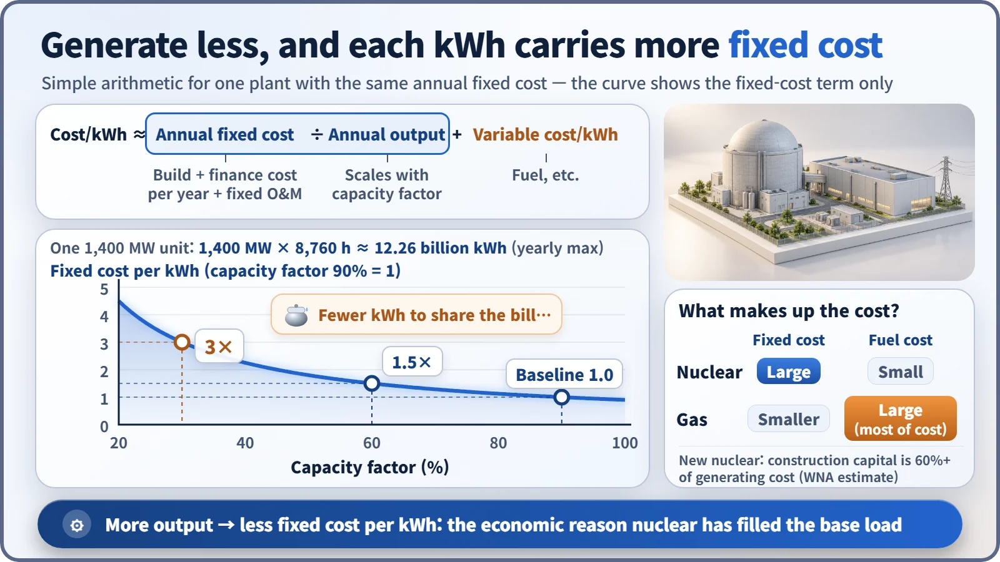

Plant Operation, Control & the Grid · 226
Why the Rice Cooker Stays On All Day — How Nuclear Plants Came to Be Called Base-Load Generation
Nuclear plants run steadily around the clock less because they can't change output and more because it is the economically sensible role for an expensive machine with cheap fuel.
Base load is the floor that electricity demand never drops below, and base-load generation is the role of filling that floor with nearly constant output around the clock. Nuclear plants took that role less because they cannot change output and more because their costs are mostly fixed: the more they run, the cheaper each kilowatt-hour becomes. [1]
"Nuclear plants can't change their output, so they just run the same day and night." You hear this a lot, and it is only half right. Nuclear plants do run steadily around the clock, but not because they "can't" do otherwise.
The rice cooker and the deep fryer
Picture the kitchen of a busy neighborhood diner. The rice cooker is switched on when the doors open and stays on until closing, because rice goes out steadily all day. The deep fryer runs flat out during the lunch and dinner rush and is switched off when things are quiet.
The power grid divides the work the same way. Electricity demand is lowest around 4 to 5 a.m. and, in summer, highest in the late afternoon. South Korea's all-time record was 97.1 GW, set at 5 p.m. on August 20, 2024. Yet even in the dead of night, demand never drops to zero: refrigerators, continuous industrial processes, telecommunications networks and hospitals never sleep. [2]
This floor that demand never falls below is the base load. On top of it sits the intermediate load, which rises gently through the daytime, and then the peak load, added in the afternoon and evening when demand surges. Where you draw the lines between layers is a convention for explanation, not a fixed boundary. Filling the floor with nearly constant output, 24 hours a day, is the job of base-load generation: the rice cooker's job.

"Base load" originally describes a property of demand. It isn't a name tag on a particular plant; it is a role. Coal plants and hydro plants with plenty of water have played it too.
An expensive machine with cheap ingredients should never rest
Why did nuclear end up in the rice-cooker seat? Mostly because of its cost structure. Fixed costs, such as the yearly share of paying off construction, are the same whether the plant runs or sits idle. Variable costs, such as fuel, are spent each time more electricity is made. For a newly built nuclear plant, more than 60% of the generating cost is construction capital, while fuel is a small slice: even if the uranium price doubled, the generating cost would rise by less than 10%. A gas-fired plant is the opposite, with fuel making up most of its cost. [1]
For an expensive machine with cheap ingredients, the more you run it, the less machine cost each kilowatt-hour carries:
Cost per kWh ≈ annual fixed cost ÷ annual output + variable cost per kWh
The fixed cost is set, so if output falls, each kWh shoulders a bigger share. One 1,400 MW unit at full power all year produces 1,400 MW × 8,760 hours, about 12.26 billion kWh. The ratio of actual output to that maximum is the capacity factor. With the same fixed cost, dropping the capacity factor from 90% to 60% makes the fixed cost per kWh 1.5 times larger; dropping it to 30% makes it 3 times larger.

Grid operations follow the same logic. System operators switch on generators starting with those whose variable cost of making one more kWh is lowest, an order called the merit order. With its low variable cost, nuclear stands near the front of the line and runs almost all the time.
One-sixth of capacity, one-third of the electricity
At the end of 2024, South Korea had 26,050 MW of nuclear capacity, about 17% of all generating capacity, yet nuclear supplied roughly one-third of that year's electricity. South Korea's nuclear capacity factor in 2024 was 83.8%; U.S. plants recorded 93.1% in 2023. [3] [4]
The capacity factor isn't 100% because a plant runs 12 to 18 months on one load of fuel, then stops for a month or two of planned maintenance to refuel and inspect equipment.
| Measure | What it asks | Typical nuclear value |
|---|---|---|
| Capacity factor | How steadily did the plant run? | 80s–90s % |
| Thermal efficiency | How much of the heat became electricity? | About 33–35% |
Capacity factor is not efficiency. They are two different report cards.
So is "it can't change output" simply wrong?
It's half wrong. Nuclear plants are designed to run for long stretches, stably, near rated power. Changing output often and by large amounts adds thermal stress on the fuel cladding, the metal tubes that hold the fuel, and tracking changes in fission products in the core means more control work and more operator actions. And because fuel and construction costs are already spent, lowering output saves little money.
That doesn't mean output can't be adjusted. Some countries, such as France, have long ramped nuclear output up and down to match demand, an operating mode called load following. [1]
The reverse misunderstanding, "base load means always running at 100%," is wrong too. Base load is the role of steadily covering the floor of demand; plants stop for maintenance and can lower output when the grid needs it.
Key takeaways
- Base load is the floor of daily demand; base-load generation is the role of filling it with nearly constant output.
- Nuclear took that role mainly for economic reasons: with mostly fixed costs, the fixed cost per kWh falls as the capacity factor rises.
- Capacity factor (how steadily) and thermal efficiency (how much heat becomes electricity) are different measures.
- Nuclear output can be adjusted; load following is practiced in countries such as France.
As weather-dependent solar and wind grow, grids are seeking more flexible operation, and how nuclear plants are run is being discussed again. It isn't a question of which source is superior; it's closer to redrawing the kitchen's duty roster.